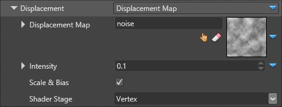
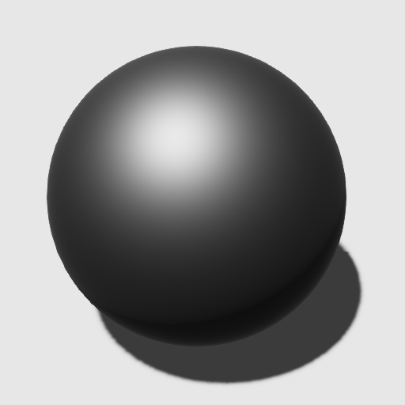
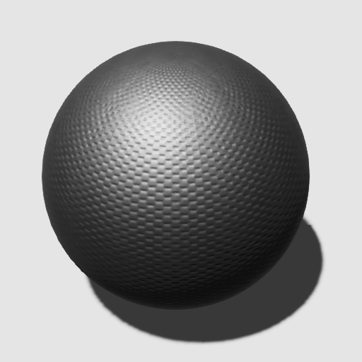
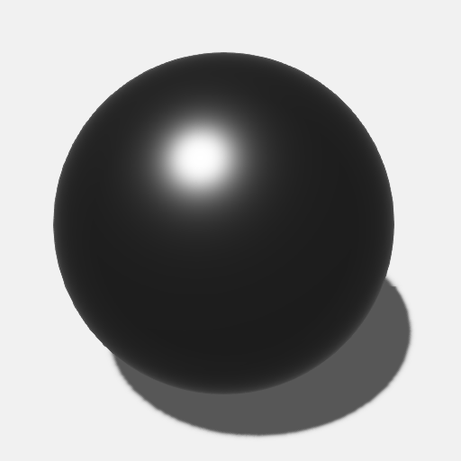

ジオメトリ属性
中級 アーティスト プログラマー
マテリアルのジオメトリ属性は、マテリアルの形状を定義します。

テッセレーション
リアルタイムテッセレーションでは、GPU のハードウェア機能を利用して、三角形を細分化します。これにより、リアリティーが高まり、ジオメトリ表面の歪みが軽減されます。
なし（None）、フラットテッセレーション、ポイントノーマルテッセレーションのいずれかを選択できます。
| テッセレーションなし | フラットテッセレーション | ポイントノーマルテッセレーション |
|---|---|---|
 |
 |
フラットテッセレーション
このオプションは、メッシュを一様にテッセレーションします。

次の画像では、フラットテッセレーションが三角形を追加する方法に着目してください。曲線は考慮されていません。
| テッセレーションなし | フラットテッセレーション |
|---|---|
 |
 |
| プロパティ | 説明 |
|---|---|
| Triangle size | 画面空間単位でのテッセレーションされた三角形のサイズ。 |
| Adjacent edges average | 隣接するエッジの平均値から三角形のサイズを調整します。 |
ポイントノーマルテッセレーション
このオプションは、メッシュの法線から得られる曲率を使ってメッシュをテッセレーションします。

次の画像は、ポイントノーマルテッセレーションが、メッシュの曲率を考慮しつつ、追加の三角形を追加する様子を示しています。
| テッセレーションなし | Point normal tessellation |
|---|---|
|
 |
| プロパティ | 説明 |
|---|---|
| Triangle size | 画面空間単位でのテッセレーションされた三角形のサイズ。 |
| Adjacent edge average | 隣接するエッジの平均値から、三角形のサイズと法線の曲率を調整します。 |
ディスプレースメント
ディスプレースメント（変位） プロパティでは、ディスプレースメントマップを指定することができます。これは、メッシュのジオメトリを変位させるものです。

ディスプレースメントを適用する段階によって、結果は大きく異なります。
| 頂点シェーダーを使ったディスプレースメント | ディスプレースメント テッセレーション |
|---|---|
 |
| プロパティ | 説明 |
|---|---|
| Displacement Map | マテリアル カラー プロバイダとしてのディスプレースメントテクスチャー |
| Intensity | ディスプレースメント量（変位量） |
| Scale & Bias | これを有効にすると、テクスチャーからの値は 0.0 から 1.0 の間の正の値とみなされ、シェーダーは -1.0 から 1.0 の範囲になるようにスケールを適用します。 |
| Shader Stage | ディスプレースメントマップを適用するシェーダーステージを、頂点シェーダーとドメインシェーダー（テッセレーションで使用）のどちらにするかを指定します。 |
サーフェス

サーフェスプロパティでは、マクロのサーフェス法線を定義するための法線マップを指定することができます。法線マップは、メッシュの法線のピクセルごとの摂動を表現します。法線マップは、メッシュのバンプやインデントの外観を生成します。
| フラット | 法線マップを使用 |
|---|---|
|  |  |
| プロパティ | 説明 |
|---|---|
| Normal map | 法線マップ。 |
| Scale and offset | テクスチャーから得た値を 0.0 から 1.0 の間の正の値として解釈します。シェーダーは -1.0 から 1.0 の範囲になるようにスケールを適用します。 |
| Reconstruct Z | テクスチャーに Z 成分がない場合は、X と Y の成分から再構成します。これは、X2 + Y2 + Z2 = 1 であり、Z は常に正であると仮定しているので、どの法線ベクトルもサーフェスの裏側を指すことはできません。法線マップを圧縮する際、Stride は Z 成分を削除する可能性があるので、このオプションを有効にすることをお勧めします。 |
法線マップの詳細については、法線マップを参照してください。
マイクロサーフェス
マイクロサーフェス設定では、ピクセルごとの光沢情報を提供するグロス（光沢）マップを設定することができます。

Float を選択した場合：
- 値が
1.0であれば、サーフェスに非常に光沢があることを意味します（粗い法線が乱れてない）。 - 値が
0.0の場合、サーフェスが非常に粗い（粗い法線が複数の方向に大きく乱れている）ことを意味します。
次のスクリーンショットでは、マテリアルの光沢のレベルを変えて表示しています。
- Diffuse = #848484, Lambert
- Specular Metalness = 1.0, GGX
| Gloss = 0.0 | 0.25 | 0.5 | 0.8 | 1.0 |
|---|---|---|---|---|
 |
 |  |
| プロパティ | 説明 |
|---|---|
| Gloss map | グロスマップ。 |
| Invert | グロス値を反転させます（例: 値が 1.0 の場合、光沢度は最大ではなく 0 になります）。これは、他のゲームエンジンで使用されているように、光沢値を粗さ（roughness） の値に変える効果があります。 |
ローカルリフレクションを有効にしている場合、ローカルリフレクションのプロパティで指定したしきい値よりも高いグロスマップ値を持つマテリアルにシーンが反映されます。詳細は、ローカルリフレクションを参照してください。